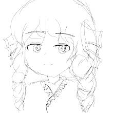
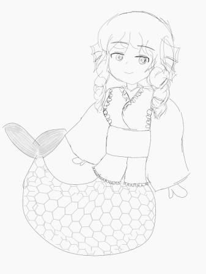
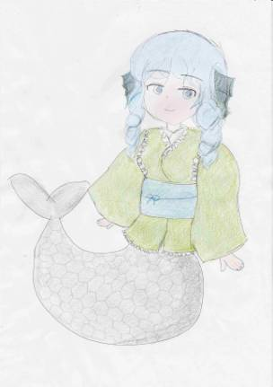

(公開日:2021/10/7)
3年前から東方が好きという理由だけで下手ながらイラストを描いている私ですが、このサイト最初の記事となる今回はわかさぎ姫を描いてみました。
----その前に、わかさぎ姫って誰やねんって方はこちらからどぞ(右クリックから開いてください)----
私は普段イラストを描くときはPCだとfirealpaca、スマホだとIbispaintを使っていますが、今回はスマホで描いたのでIbispaintを使用しました。
そんなことはどうでもいいのですが(爆)
まず顔から描きます。私自身丸顔が好みなので丸めに描いてみました。髪の毛はてきとー。

見にくくて申し訳ない(-_-;)
この時点でかわいいと思います。私から見たら(自画自賛はやめろ)
次に胴体と足(？)を描きました。
なんとなく岩に腰掛けてるイメージで…

私は恐ろしいほど手を描くのが苦手なので(致命的なダメージ)、形だけ描いておきました(ぉぃ
鱗は手っ取り早く描きたかったので五角形の塊を歪ませてみました。
え？もっと丁寧に描けって？
自分が描いてみろって話ですよ。
その分世の中の絵師さんは本当に凄いと思います。
なんであんなきれいな絵が描けるんですか……教えてください(`・ω・´)ゞ
さて、色を付けるとしましょう。
いつもはアイビスでそのまま色を塗るのですが、なかなかうまくいかなかったのでコピー用紙に刷って色鉛筆で色を付けました。

ま、、、かわいいんじゃないんですかね…
完璧の基準は人それぞれ違うと思いますが、私はかわいければそれでヨシ！という人なので、これで完成としました。
＜結論＞
もっと練習しよう(＾ω＾)
©
2021 tasyumiweb